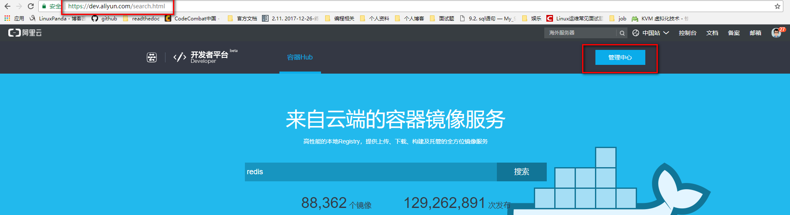

15.1. docker基础¶
15.1.1. docker安装¶
[root@centos-151 ~]# cd /etc/yum.repos.d/
[root@centos-151 yum.repos.d]# ls
bak CentOS-Base.repo epel.repo mariadb.repo.bak
[root@centos-151 yum.repos.d]# wget http://mirrors.aliyun.com/docker-ce/linux/centos/docker-ce.repo
[root@centos-151 ~]# yum install docker
[root@centos-151 ~]# systemctl enable docker
[root@centos-151 ~]# systemctl start docker
15.1.2. docker基础信息获取¶
获取version
[root@centos-151 ~]# docker version
Client:
Version: 1.13.1
API version: 1.26
Package version: <unknown>
Go version: go1.8.3
Git commit: 774336d/1.13.1
Built: Wed Mar 7 17:06:16 2018
OS/Arch: linux/amd64
Server:
Version: 1.13.1
API version: 1.26 (minimum version 1.12)
Package version: <unknown>
Go version: go1.8.3
Git commit: 774336d/1.13.1
Built: Wed Mar 7 17:06:16 2018
OS/Arch: linux/amd64
Experimental: false
获取info
[root@centos-151 ~]# docker info
Containers: 0
Running: 0
Paused: 0
Stopped: 0
Images: 0
Server Version: 1.13.1
Storage Driver: overlay2
Backing Filesystem: xfs
Supports d_type: true
Native Overlay Diff: true
Logging Driver: journald
Cgroup Driver: systemd
Plugins:
Volume: local
Network: bridge host macvlan null overlay
Swarm: inactive
Runtimes: docker-runc runc
Default Runtime: docker-runc
Init Binary: docker-init
containerd version: (expected: aa8187dbd3b7ad67d8e5e3a15115d3eef43a7ed1)
runc version: N/A (expected: 9df8b306d01f59d3a8029be411de015b7304dd8f)
init version: N/A (expected: 949e6facb77383876aeff8a6944dde66b3089574)
Security Options:
seccomp
WARNING: You're not using the default seccomp profile
Profile: /etc/docker/seccomp.json
Kernel Version: 3.10.0-693.el7.x86_64
Operating System: CentOS Linux 7 (Core)
OSType: linux
Architecture: x86_64
Number of Docker Hooks: 3
CPUs: 1
Total Memory: 506.3 MiB
Name: centos-151.linuxpanda.tech
ID: QQNH:77EU:CBH7:NHX4:A5H4:4PEA:YJBK:EFXQ:VCOP:C2YL:QH7O:Q7XE
Docker Root Dir: /var/lib/docker
Debug Mode (client): false
Debug Mode (server): false
Registry: https://index.docker.io/v1/
WARNING: bridge-nf-call-iptables is disabled
WARNING: bridge-nf-call-ip6tables is disabled
Experimental: false
Insecure Registries:
127.0.0.0/8
Live Restore Enabled: false
Registries: docker.io (secure)
15.1.3. docker常用命令¶
docker run 运行一个容器
docker create 创建，需要在配合start命令
docker start 启动一个创建好的容器
docker stop 停止容器
docker kill 杀掉容器
docker restart 重启容器
docker pause 暂停容器
docker search 查询registry的相关镜像
docker pull 从registry拉取镜像
docker push 推送到registry
docker save 保存成压缩包
docker load 从压缩包加载进来
docker log 查看日志信息
docker info 查看docker信息
docker version 查看docker版本
docker inspect 查看镜像容器信息
docker images 查看已有镜像信息
docker rm 删除容器
[root@centos-151 ~]# docker
build diff history inspect logs port restart search stats top wait
commit events image kill network ps rm secret stop unpause
container exec images load node pull rmi service swarm update
cp export import login pause push run stack system version
create help info logout plugin rename save start tag volume
15.1.4. docker run常用命令¶
[root@centos-151 ~]# docker help run
Usage: docker run [OPTIONS] IMAGE [COMMAND] [ARG...]
Run a command in a new container
Options:
--add-host list Add a custom host-to-IP mapping (host:ip) (default [])
-a, --attach list Attach to STDIN, STDOUT or STDERR (default [])
--blkio-weight uint16 Block IO (relative weight), between 10 and 1000, or 0 to disable (default 0)
--blkio-weight-device weighted-device Block IO weight (relative device weight) (default [])
--cap-add list Add Linux capabilities (default [])
--cap-drop list Drop Linux capabilities (default [])
--cgroup-parent string Optional parent cgroup for the container
--cidfile string Write the container ID to the file
--cpu-count int CPU count (Windows only)
--cpu-percent int CPU percent (Windows only)
--cpu-period int Limit CPU CFS (Completely Fair Scheduler) period
--cpu-quota int Limit CPU CFS (Completely Fair Scheduler) quota
--cpu-rt-period int Limit CPU real-time period in microseconds
--cpu-rt-runtime int Limit CPU real-time runtime in microseconds
-c, --cpu-shares int CPU shares (relative weight)
--cpus decimal Number of CPUs (default 0.000)
--cpuset-cpus string CPUs in which to allow execution (0-3, 0,1)
--cpuset-mems string MEMs in which to allow execution (0-3, 0,1)
--credentialspec string Credential spec for managed service account (Windows only)
-d, --detach Run container in background and print container ID
--detach-keys string Override the key sequence for detaching a container
--device list Add a host device to the container (default [])
--device-read-bps throttled-device Limit read rate (bytes per second) from a device (default [])
--device-read-iops throttled-device Limit read rate (IO per second) from a device (default [])
--device-write-bps throttled-device Limit write rate (bytes per second) to a device (default [])
--device-write-iops throttled-device Limit write rate (IO per second) to a device (default [])
--disable-content-trust Skip image verification (default true)
--dns list Set custom DNS servers (default [])
--dns-option list Set DNS options (default [])
--dns-search list Set custom DNS search domains (default [])
--entrypoint string Overwrite the default ENTRYPOINT of the image
-e, --env list Set environment variables (default [])
--env-file list Read in a file of environment variables (default [])
--expose list Expose a port or a range of ports (default [])
--group-add list Add additional groups to join (default [])
--health-cmd string Command to run to check health
--health-interval duration Time between running the check (ns|us|ms|s|m|h) (default 0s)
--health-retries int Consecutive failures needed to report unhealthy
--health-timeout duration Maximum time to allow one check to run (ns|us|ms|s|m|h) (default 0s)
--help Print usage
-h, --hostname string Container host name
--init Run an init inside the container that forwards signals and reaps processes
--init-path string Path to the docker-init binary
-i, --interactive Keep STDIN open even if not attached
--io-maxbandwidth string Maximum IO bandwidth limit for the system drive (Windows only)
--io-maxiops uint Maximum IOps limit for the system drive (Windows only)
--ip string Container IPv4 address (e.g. 172.30.100.104)
--ip6 string Container IPv6 address (e.g. 2001:db8::33)
--ipc string IPC namespace to use
--isolation string Container isolation technology
--kernel-memory string Kernel memory limit
-l, --label list Set meta data on a container (default [])
--label-file list Read in a line delimited file of labels (default [])
--link list Add link to another container (default [])
--link-local-ip list Container IPv4/IPv6 link-local addresses (default [])
--log-driver string Logging driver for the container
--log-opt list Log driver options (default [])
--mac-address string Container MAC address (e.g. 92:d0:c6:0a:29:33)
-m, --memory string Memory limit
--memory-reservation string Memory soft limit
--memory-swap string Swap limit equal to memory plus swap: '-1' to enable unlimited swap
--memory-swappiness int Tune container memory swappiness (0 to 100) (default -1)
--name string Assign a name to the container
--network string Connect a container to a network (default "default")
--network-alias list Add network-scoped alias for the container (default [])
--no-healthcheck Disable any container-specified HEALTHCHECK
--oom-kill-disable Disable OOM Killer
--oom-score-adj int Tune host's OOM preferences (-1000 to 1000)
--pid string PID namespace to use
--pids-limit int Tune container pids limit (set -1 for unlimited)
--privileged Give extended privileges to this container
-p, --publish list Publish a container's port(s) to the host (default [])
-P, --publish-all Publish all exposed ports to random ports
--read-only Mount the container's root filesystem as read only
--restart string Restart policy to apply when a container exits (default "no")
--rm Automatically remove the container when it exits
--runtime string Runtime to use for this container
--security-opt list Security Options (default [])
--shm-size string Size of /dev/shm, default value is 64MB
--sig-proxy Proxy received signals to the process (default true)
--stop-signal string Signal to stop a container, SIGTERM by default (default "SIGTERM")
--stop-timeout int Timeout (in seconds) to stop a container
--storage-opt list Storage driver options for the container (default [])
--sysctl map Sysctl options (default map[])
--tmpfs list Mount a tmpfs directory (default [])
-t, --tty Allocate a pseudo-TTY
--ulimit ulimit Ulimit options (default [])
-u, --user string Username or UID (format: <name|uid>[:<group|gid>])
--userns string User namespace to use
--uts string UTS namespace to use
-v, --volume list Bind mount a volume (default [])
--volume-driver string Optional volume driver for the container
--volumes-from list Mount volumes from the specified container(s) (default [])
-w, --workdir string Working directory inside the container
# 上面就是获取run子命令的方法， 常用的选项是下面几个
-i： 交互模式
-t： 分配终端
-v： 卷设置
-p： 端口配置
-h： 主机名
-a： 附加
-e: 环境变量
--rm: 停掉容器就删除
15.1.5. docker拉取和分发¶
在拉取和分发之前需要配置下docker加速,因为默认是从dockerhub上拉取的，太慢了。
15.1.5.1. docker加速器配置¶

[root@centos-151 ~]# sudo mkdir -p /etc/docker
[root@centos-151 ~]# sudo tee /etc/docker/daemon.json <<-'EOF'
> {
> "registry-mirrors": ["https://mdobwrbd.mirror.aliyuncs.com"]
> }
> EOF
{
"registry-mirrors": ["https://mdobwrbd.mirror.aliyuncs.com"]
}
[root@centos-151 ~]# sudo systemctl daemon-reload
[root@centos-151 ~]# sudo systemctl restart docker
[root@centos-151 ~]# cat /etc/docker/daemon.json
{
"registry-mirrors": ["https://mdobwrbd.mirror.aliyuncs.com"]
}
Note
上面的加速地址，是阿里云给我分配的加速地址，如果没有阿里云的账号，可以使用docker中国的加速器，地址为https://registry.docker-cn.com
15.1.5.2. 镜像拉取(pull)¶
[root@centos-151 ~]# docker pull alpine
[root@centos-151 ~]# docker pull busybox
[root@centos-151 ~]# docker pull cirros
[root@centos-151 ~]# docker pull centos
[root@centos-151 ~]# docker image ls
REPOSITORY TAG IMAGE ID CREATED SIZE
docker.io/busybox latest 2716f21dc1e3 33 hours ago 1.15 MB
docker.io/centos latest 2d194b392dd1 4 weeks ago 195 MB
docker.io/alpine latest 3fd9065eaf02 2 months ago 4.15 MB
docker.io/cirros latest a5e21e1957b6 5 months ago 7.74 MB
# 运行一个容器
[root@centos-151 ~]# docker run -it busybox
/ # ls
bin dev etc home proc root run sys tmp usr var
/ # ifconfig
eth0 Link encap:Ethernet HWaddr 02:42:AC:11:00:02
inet addr:172.17.0.2 Bcast:0.0.0.0 Mask:255.255.0.0
inet6 addr: fe80::42:acff:fe11:2/64 Scope:Link
UP BROADCAST RUNNING MULTICAST MTU:1500 Metric:1
RX packets:16 errors:0 dropped:0 overruns:0 frame:0
TX packets:8 errors:0 dropped:0 overruns:0 carrier:0
collisions:0 txqueuelen:0
RX bytes:1296 (1.2 KiB) TX bytes:648 (648.0 B)
lo Link encap:Local Loopback
inet addr:127.0.0.1 Mask:255.0.0.0
inet6 addr: ::1/128 Scope:Host
UP LOOPBACK RUNNING MTU:65536 Metric:1
RX packets:0 errors:0 dropped:0 overruns:0 frame:0
TX packets:0 errors:0 dropped:0 overruns:0 carrier:0
collisions:0 txqueuelen:1
RX bytes:0 (0.0 B) TX bytes:0 (0.0 B)
# 查看运行的容器信息
[root@centos-151 ~]# docker ps
CONTAINER ID IMAGE COMMAND CREATED STATUS PORTS NAMES
7913587953d5 busybox "sh" 8 seconds ago Up 8 seconds goofy_feynman
[root@centos-151 ~]# docker ps -a
CONTAINER ID IMAGE COMMAND CREATED STATUS PORTS NAMES
7913587953d5 busybox "sh" 51 seconds ago Exited (130) 6 seconds ago goofy_feynman
1d60bcd49b65 busybox "sh" 4 minutes ago Exited (0) About a minute ago inspiring_colden
15.1.5.3. 镜像推送(push)¶
# 拉取镜像
[root@centos-151 ~]# docker pull nginx:1.12-alpine
# 运行镜像
[root@centos-151 ~]# docker run --name nginx1 -d nginx:1.12-alpine
88fd050b758c611fe7e1972ffd5c673fd957838b9f60e31e531019e86ef8481b
# 查看
[root@centos-151 ~]# docker ps
CONTAINER ID IMAGE COMMAND CREATED STATUS PORTS NAMES
88fd050b758c nginx:1.12-alpine "nginx -g 'daemon ..." 7 seconds ago Up 6 seconds 80/tcp nginx1
[root@centos-151 ~]# docker help exec
[root@centos-151 ~]# docker exec -it nginx1 /bin/sh
/ # ls
bin dev etc home lib media mnt proc root run sbin srv sys tmp usr var
/ # cd /etc/nginx/
/etc/nginx # vim nginx.conf
/bin/sh: vim: not found
/etc/nginx # ls
conf.d fastcgi_params koi-win modules scgi_params uwsgi_params.default
fastcgi.conf fastcgi_params.default mime.types nginx.conf scgi_params.default win-utf
fastcgi.conf.default koi-utf mime.types.default nginx.conf.default uwsgi_params
/etc/nginx # cd conf.d/
/etc/nginx/conf.d # ls
default.conf
/etc/nginx/conf.d # vi default.conf
# 添加一个location
location /test {
root /data/html ;
index index.html;
}
/etc/nginx/conf.d # echo "hello linuxpanda.tech " > /data/html/test/index.html
/bin/sh: can't create /data/html/test/index.html: nonexistent directory
/etc/nginx/conf.d # mkdir /data/html/test -pv
/etc/nginx/conf.d # echo "hello linuxpanda.tech " > /data/html/test/index.html
准备下阿里云相关的配置


在另一个主机上面pull下来，测试
[root@centos-152 docker]# docker pull registry.cn-beijing.aliyuncs.com/zhaojiedi1992/test:v1
[root@centos-152 docker]# docker image ls
REPOSITORY TAG IMAGE ID CREATED SIZE
registry.cn-beijing.aliyuncs.com/zhaojiedi1992/test v1 f51a8135583c 27 minutes ago 15.5 MB
[root@centos-152 docker]# docker run --name nginx02 -d f51a8135583c
39b4d5747dc24a40509011c9b33e21435d6798ee8d113a438183808d1a3bf259
[root@centos-152 docker]# curl 172.17.0.2/test/
hello linuxpanda.tech
15.1.5.4. 镜像保存(save)¶
[root@centos-151 yum.repos.d]# docker save busybox alpine | gzip > tree.tgz
[root@centos-151 yum.repos.d]# scp tree.tgz 192.168.46.152:/root
15.1.5.5. 镜像加载(load)¶
[root@centos-152 ~]# docker help load
[root@centos-152 ~]# docker image load -i tree.tgz
3e596351c689: Loading layer [==================================================>] 1.36 MB/1.36 MB
Loaded image: docker.io/busybox:latest
cd7100a72410: Loading layer [==================================================>] 4.403 MB/4.403 MB
Loaded image: docker.io/alpine:latest
[root@centos-152 ~]# docker image ls
REPOSITORY TAG IMAGE ID CREATED SIZE
docker.io/busybox latest 2716f21dc1e3 37 hours ago 1.15 MB
docker.io/alpine latest 3fd9065eaf02 2 months ago 4.15 MB
15.1.7. docker网络¶
docker的网络分为四种
- closed: 封闭的， 只有lo本地回环网卡
- bridged: 桥接，这是默认的
- joined: 连接的，多个docker公用一个network命名空间
- opened: 开放的，和宿主机一个命名空间
15.1.7.1. 查看网络列表¶
[root@centos-151 ~]# docker network ls
NETWORK ID NAME DRIVER SCOPE
e00b7e276b12 bridge bridge local
42c62865be61 host host local
ccb7572950be none null local
15.1.7.2. bridge¶
[root@centos-151 ~]# docker run --name busybox10 -it busybox
/ # ifconfig
eth0 Link encap:Ethernet HWaddr 02:42:AC:11:00:05
inet addr:172.17.0.5 Bcast:0.0.0.0 Mask:255.255.0.0
inet6 addr: fe80::42:acff:fe11:5/64 Scope:Link
UP BROADCAST RUNNING MULTICAST MTU:1500 Metric:1
RX packets:6 errors:0 dropped:0 overruns:0 frame:0
TX packets:6 errors:0 dropped:0 overruns:0 carrier:0
collisions:0 txqueuelen:0
RX bytes:508 (508.0 B) TX bytes:508 (508.0 B)
lo Link encap:Local Loopback
inet addr:127.0.0.1 Mask:255.0.0.0
inet6 addr: ::1/128 Scope:Host
UP LOOPBACK RUNNING MTU:65536 Metric:1
RX packets:0 errors:0 dropped:0 overruns:0 frame:0
TX packets:0 errors:0 dropped:0 overruns:0 carrier:0
collisions:0 txqueuelen:1
RX bytes:0 (0.0 B) TX bytes:0 (0.0 B)
/ # ^C
/ # exit
15.1.7.3. closed¶
[root@centos-151 ~]# docker run --name busybox11 -it --network none busybox
/ # ifconfig
lo Link encap:Local Loopback
inet addr:127.0.0.1 Mask:255.0.0.0
inet6 addr: ::1/128 Scope:Host
UP LOOPBACK RUNNING MTU:65536 Metric:1
RX packets:0 errors:0 dropped:0 overruns:0 frame:0
TX packets:0 errors:0 dropped:0 overruns:0 carrier:0
collisions:0 txqueuelen:1
RX bytes:0 (0.0 B) TX bytes:0 (0.0 B)
/ # exit
15.1.7.4. joined¶
[root@centos-151 ~]# docker run --name nginx11 -d --rm nginx:1.12-alpine
cf5e89cddf175152472d25d51d52ae1e136bc5887682f24203bb178487674103
[root@centos-151 ~]# docker inspect nginx11 |grep -i ipa
"SecondaryIPAddresses": null,
"IPAddress": "172.17.0.5",
"IPAMConfig": null,
"IPAddress": "172.17.0.5",
[root@centos-151 ~]# docker run --name busybox12 --rm -it --network container:nginx11 busybox
/ # curl localhost
sh: curl: not found
/ # wget localhost
Connecting to localhost (127.0.0.1:80)
index.html 100% |**************************************************************************************************************************************************| 612 0:00:00 ETA
/ # cat index.html
<!DOCTYPE html>
<html>
<head>
<title>Welcome to nginx!</title>
<style>
body {
width: 35em;
margin: 0 auto;
font-family: Tahoma, Verdana, Arial, sans-serif;
}
</style>
</head>
<body>
<h1>Welcome to nginx!</h1>
<p>If you see this page, the nginx web server is successfully installed and
working. Further configuration is required.</p>
<p>For online documentation and support please refer to
<a href="http://nginx.org/">nginx.org</a>.<br/>
Commercial support is available at
<a href="http://nginx.com/">nginx.com</a>.</p>
<p><em>Thank you for using nginx.</em></p>
</body>
</html>
15.1.7.5. opened¶
[root@centos-151 ~]# docker run --name nginx15 -d --network host nginx:1.12-alpine
f0fd0f9069cab8126c53cde3baa8d76a94e89abd709a7864b96bfeb400628677
[root@centos-151 ~]# docker inspect nginx15 |grep -i ipa
"SecondaryIPAddresses": null,
"IPAddress": "",
"IPAMConfig": null,
"IPAddress": "",
[root@centos-151 ~]# curl localhost
<!DOCTYPE html>
<html>
<head>
<title>Welcome to nginx!</title>
<style>
body {
width: 35em;
margin: 0 auto;
font-family: Tahoma, Verdana, Arial, sans-serif;
}
</style>
</head>
<body>
<h1>Welcome to nginx!</h1>
<p>If you see this page, the nginx web server is successfully installed and
working. Further configuration is required.</p>
<p>For online documentation and support please refer to
<a href="http://nginx.org/">nginx.org</a>.<br/>
Commercial support is available at
<a href="http://nginx.com/">nginx.com</a>.</p>
<p><em>Thank you for using nginx.</em></p>
</body>
</html>
15.1.7.6. docker端口映射¶
[root@centos-151 ~]# docker run --name nginx17 -d -p 80:80 nginx:1.12-alpine
dda9ec45687aa71d552a32e65bb7d703a1b2170ea57416543a67e2055e1f5052
[root@centos-152 ~]# clear
[root@centos-152 ~]# curl 192.168.46.151
<!DOCTYPE html>
<html>
<head>
<title>Welcome to nginx!</title>
<style>
body {
width: 35em;
margin: 0 auto;
font-family: Tahoma, Verdana, Arial, sans-serif;
}
</style>
</head>
<body>
<h1>Welcome to nginx!</h1>
<p>If you see this page, the nginx web server is successfully installed and
working. Further configuration is required.</p>
<p>For online documentation and support please refer to
<a href="http://nginx.org/">nginx.org</a>.<br/>
Commercial support is available at
<a href="http://nginx.com/">nginx.com</a>.</p>
<p><em>Thank you for using nginx.</em></p>
</body>
</html>
#查看映射
[root@centos-151 ~]# docker port nginx17
80/tcp -> 0.0.0.0:80